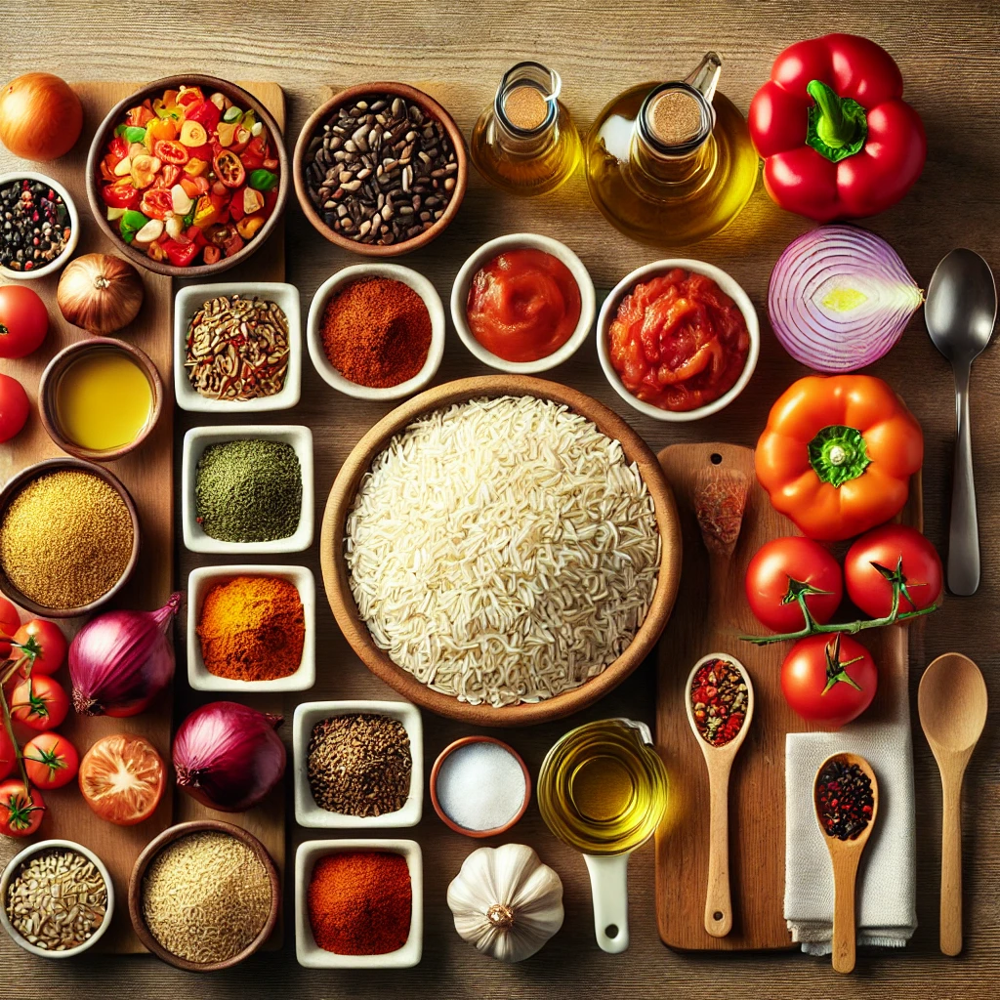

Home
Nigerian-Jallof-Rice
Description
Jallof Rice is a flavorful, one-pot dish that is widely celebrated across West Africa, with variations in Nigeria, Ghana, Senegal, and beyond. Known for its vibrant red-orange color and smoky, savory taste, this dish is made with rice cooked in a rich tomato-based sauce, blended with aromatic spices and herbs.
Jollof Rice is often served with fried plantains, grilled chicken, fish, or beef and is a staple at parties, family gatherings, and festive occasions. Its versatility allows for various additions, such as vegetables, shrimp, or other proteins, making it a beloved comfort food and cultural icon
Ingredients

- 2 cups of long-grain parboiled rice
- 1/4 cup of vegetable oil
- 1 large onion, chopped
- 4 medium tomatoes, blended
- 3 tablespoons of tomato paste
- 1 red bell pepper, blended
- 2 cups of chicken or vegetable broth
- 1 teaspoon of curry powder
- 1 teaspoon of thyme
- 1 teaspoon of smoked paprika
- 1/2 teaspoon of cayenne pepper (optional)
- Salt to taste
- 1 cup of mixed vegetables (optional)
Steps
- Heat the vegetable oil in a large pot over medium heat.
- Saute the chopped onion until translucent.
- Add the blended tomatoes, bell pepper, and tomato paste. Cook for 10-15 minutes, stirring occasionally.
- Stir in the curry powder, thyme, smoked paprika, cayenne pepper (if using), and salt.
- Add the chicken or vegetable broth and bring to a boil.
- Rinse the rice and add it to the pot. Reduce the heat to low, cover, and let it simmer for 20-25 minutes.
- Check the rice occasionally and add a splash of water if needed to prevent sticking.
- Stir in the mixed vegetables (if using) and let them cook for an additional 5 minutes.
- Remove from heat and fluff the rice with a fork. Serve warm.